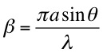
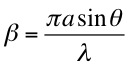

where 
where Note that φ' = φ/2, where φ is defined in the double slit interference analysis.
Qualitatively, the interference pattern is modulated by the diffraction pattern, as indicated below.
Note that the slit width "a" must be smaller than the slit separation "d" (center to center).
Interference minima occur at θ = λ/2d , 3λ/2d , 5λ/2d... [ dsinθ = (n+1/2)λ ]
Dr. C. L. Davis
Physics Department
University of Louisville
email: c.l.davis@louisville.edu